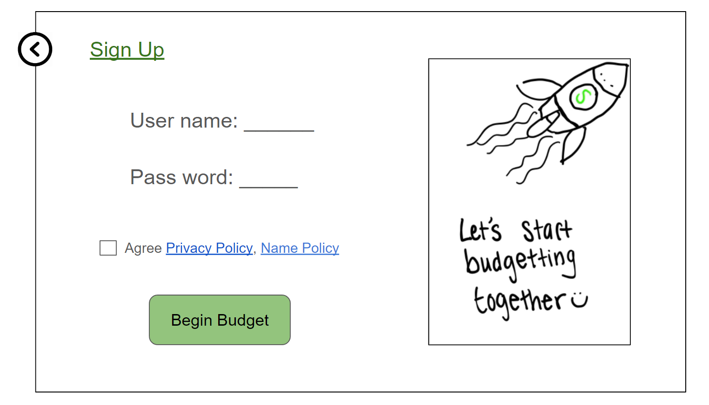
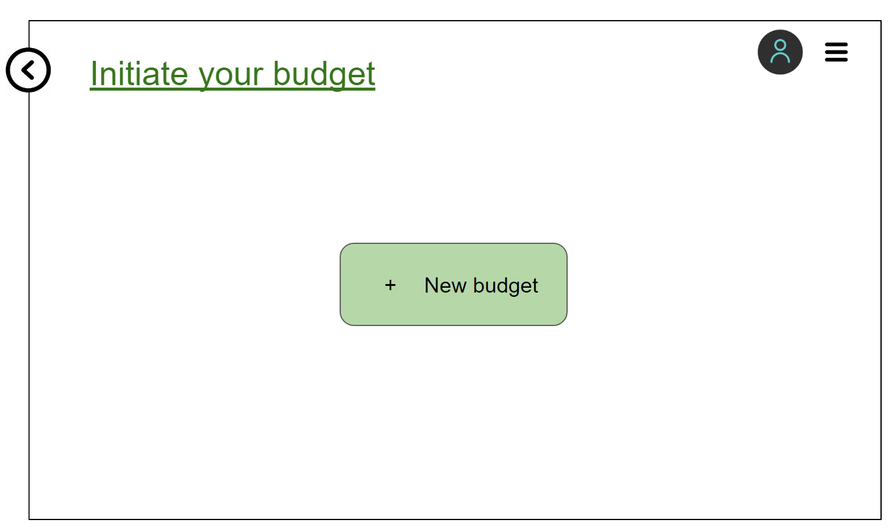
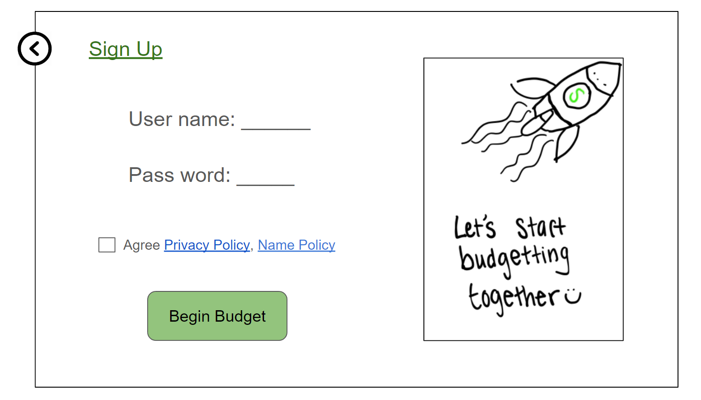
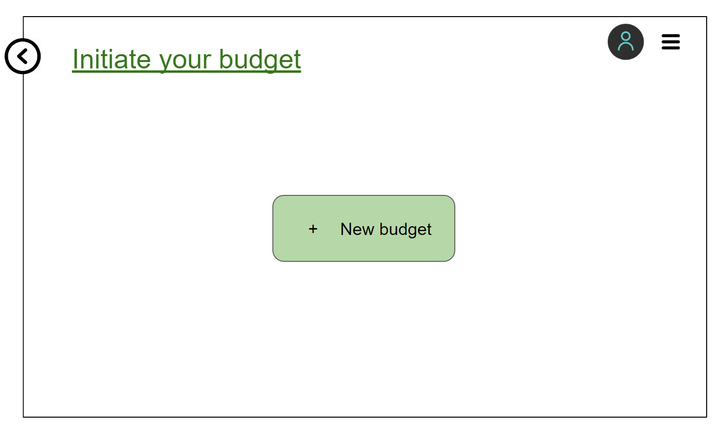

Problem and Design Overview
Most existing budget platforms are complicated to use and assume a certain level of financial literacy. This deters college students & recent graduates from reaching their financial goals. By offering an easy-to-use tool with templates, we empower users to take control of their finances without requiring extensive prior knowledge. Our platform helps users set and achieve their financial goals, reducing stress and promoting financial stability.
Design Research Process and Key Insights
Design Research Process
For our design research, we wanted to gain valuable insights into financial literacy needs and preferences. When starting a new career, it may be challenging to learn how to budget, build a credit score, and set yourself up for success in the future, and therefore we have decided to create an aid to help this specific audience. To be able to gain these insights we needed to research many different participants within our target demographic so we could create a design that would benefit our users.
We conducted four interviews with our peers, before selecting our participants we ensured that their backgrounds differed from each other and would be a good representation of where a recent graduate / current college student could be financially. Our interviewees include a 25-year-old cis-male currently living in Hawai’i working as a high school teacher, a 24-year-old female who recently dropped out of college and has started to become financially independent from her parents, a 22-year-old, UW graduating student who is about to start his career soon, and a 21-year-old male, community college student looking to transfer into a four-year university is currently unemployed living with his family.
We chose to have in-depth interviews with participants as our main design research method because we wanted to gain a deeper understanding of different tools our peers are using to manage their finances and where those tools may be lacking. Additionally, understanding various approaches to financial management would be helpful when designing our new system. The interview method was the best way for participants to explain the reasons behind their financial literacy needs. The decision to interview our peers was made because finances can be a personal topic to talk about and we wanted to make sure our participants felt comfortable.
Key Insights
Simplicity is key
The most common barrier to budgeting that people from our interviews expressed was that even starting a budget felt like a daunting tasks.
2 credit cards, 3 savings accounts. I am not sure how to manage all of them? The display style is also messy, I can hardly remember why I make such a payment, some information such as spending type gives misleading information, more complex. Also, It is completely a pain to record each tiny spending all the time.
Participant from Design Research, a 22 year old, UW graduating student who is about to start his career soon.
To address this issue we aimed to have a centralized design that would allow users to use our platform as a ‘hub’ for all of their bank accounts and make tracking payment clear and easy.
Emotions around finance
While conducting interviews with our target demographic, many of our participants revealed prevalent feelings of stress and anxiety surrounding finances.
I get overwhelmed looking at my finances, I feel alone in the world of banking. I am not sure where to get started, sometimes even talking about finances makes me feel anxious.
Participant from Design Research, a 24 year old who recently withdrew from college.
With this information in mind we thought that a feature that allows users to view other people's budgets who are in similar financial situations could help address a lot of the anxiety surrounding finances. When we brought up this idea to some of the interviewees they had positive reactions.
During the latter half of our usability testing, we recieved some feedback about concerns with this feature for privacy reasons. Because of this feedback, we ultimately, we decided not to include this design feature in the final prototype.
Goal Oriented Design
I don’t have any goals with budgeting or finances right now, I can barely save any money since it all goes towards my rent. I do wish I had the motivation to budget and felt more comfortable with finances because then I would be able to set up goals for myself.
Participant from Design Research, a 24 year old who recently withdrew from college.
I don’t know where to start [working towards a financial goal], and since it’s not a pressing issue I never get around to it.
Participant from Design Research, a 22 year old, UW graduating student who is about to start his career soon.
From interviews and comments made by fellow classmates during critiques we learned that it's not uncommon for young adults to either not have any financial goals, or not actively working towards the ones they’ve set. Our solution to this issue was to have our design be goal-oriented and offer recommended goals based on the users to help engage users with their budget.
For people who are not actively working towards their goal, we wanted to create an easy and simple way to get started on it. Additionally, having the goal be a main part of our design will make the user more inclined to start since it’ll be at the forefront of their budget plan.
On the other hand to our solution for people who don't currently have goals, we found important to include recommended goals to inspire them to pay more attention to budgeting.
Iterative Design Process and Key Insights
During our design research process, our team focused on two primary tasks:
- Get personalization budget recommendations based on my demographic and my financial situation
- View budget progress over time through tracking all expenses and adjusting as needed
The two tasks were the most complicated operations that the users will perform with our system, involving many inputs and multiple page navigation. We felt that these were significant aspects of our design, for easy budget & free edit is our design goal, besides that, this is also the most frequent task that the user will perform except view the budget content. Our process included both heuristic evaluation, usability testing, and digital mockup. We first conducted heuristic testing, finding, and fixing obvious violations to the Jakob's Ten heuristic law. We have conducted 3 usability tests during the iterative Design process. Three participants involved in the tests are all our target users but comes from different background, which ensured our service's coverage and reliability. During the test process, we've come up with 3 strategies to prevent oversharing details and focus on the tasks. With those strategies, our test result is accurate and realistic as the participant doesn’t have detailed understanding with our service before operation. The participants are also less likely to be over explorative, which make our test concise and efficient. Then we give the entire control of the operation to our participant, only providing limited clarification, verify their understanding of service, and guide them back to the main task. In that process, we observe their behavior in addition to their feedback, especially confusion, hesitation, unsure, and failure, which indicates some point our design gives misleading or blurry message to the client.
- Briefly introduce our service at a high level, including our goals and the chosen platform, which gives the participants a general idea about our design.
- Assign a background story to the test participant, i.e. tell the participant: "You just find a new job and would like to update your financial situation in current budget".
- Tell which part of the prototype is interactive in advance, i.e. The section within colored bubbles is clickable, and the blue text with underline is link.
After the evaluation and test, we followed up with a set of questions, especially questions asked by multiple participants, which would significantly hurt the user experience, and thus we understood the challenges and short comings of our prototype. We also noted where the user goes through smoothly, analyze the reason, and apply the good design in other pages. For instance, one participant suggested that colorful and distinctive button we applied in the budget summary page, which got adopted by us and further applied the colorful button in all other pages. With the advantages and the questions in mind, we finalized our paper prototype, resolving problems, adding features or functionalities, removing irrelevant content and making the layout more appealing. Based on the final version of paper prototype, we created the digital mockup with more centralized, clear, and efficient service.
Separate sign up account and create budget.
This insight emerged during our second usability test, when the participant proposed that it is really frustrating filling up a lot of content when creating an account. He said: "I expected simple steps to sign up, but it requires so many actions, I would give up this round." He also mentioned: “I don't know where to create another budget in current service." This is a severe problem, and our third participant of usability test also proposed concerns to this design. To resolve this problem, we decided to separate the sign-up account apart from create budget features. We only require the user to create an account, agree to our privacy policy and term of use, then they can enter our service without input abundant information. When the user enter our service the first time, they will only notice the highlighted centralized "create budget" button, with all other functionalities are minimized into the sandwich menu in the upper right corner of the page, indicating the only important second step in our service is creating the first budget, without losing the user's concentration when they first get into our system. Then they begin template choice and input financial data as the original workflow.
 



Provide Visualization for personal budget
This insight emerged during our heuristic evaluation and first usability test. We found our initial design violates the "Recognition Rather Than Recall" heuristic law, because we expected the user to go through the entire page with a list of spending details, with blurry and trivial content. The biggest problem is, the original design only shows the current income and spending in this month (based on user setting). Analysis that user expected a lot were not included in our original prototype. We then included spending chart, expected goal achievement, and other analysis. Our first test participant agreed on this visualization enhancement, "I can easily obtain more content from the new design, while in the original version, I got lost." He claimed that the spending list is confusing and should be minimized or only provided to those who are interested in seeing the details. The following participants of usability test also agree that visualization is significant to the budget, or they will never know what detail is going on, and how their budget is going. In this case, we provide a simple visualization containing only the spending pie chart, money spent vs income comparison, and how long the tracking goal will accomplish. In the final mockup, we make the dashboard even more complex, including saving footprint, weekly spending, multiple goal tracker and so on in a more distinctive color and more meaningful style.
Add budget history with new edit functionality.
During our usability test, participants frequently get confused when editing their existing budget. A major problem related to the editing functionality is: what if they create or change to a new budget, what will happen to their existing budgets? Or is it allowed if they want to make a copy of the existing budget in case, they just want to try the new budget? We didn't anticipated the user need multiple budgets. One of our usability test participants also raised the following problems: "Why I must enter an individual editing page? It makes no sense to display same content twice. Why not just allow edit in the detail page?" This question gets wide support among other participants. To resolve this problem and provide an efficient service, we asked the participants in detail about what they expected to achieve with a budget system and discussed deeply on potential modifications and solutions. We also realized the "budget detail" page, which exhibits the budget content with text and list, exhibits the same content the user input when creating this budget.
We finally decided a complete reformat of the budget edit functionality. We concentrated all existing budgets in the budget history page, providing convenient editing by just clicking the edit icon of that budget bubble. The centralized budget history controls all edits of the budget, the user can only enter edit mode from here. In addition, we decided to enable re-enter the budget "set up" page even though the "set up" process is finished. The "set up" page is now serving as "edit" page as well. These modifications got positive feedback as it followed the hints that the participants suggest: "I want to know what budget I have, and edit the one I selected, rather than only edit the on-going budget." Furthermore, the new design provides our client the same format as they input their content, reducing the amount of work they need to learn.
Resulting Design
Key Functionality
Template Selection - Setting up a budget
Conveniently choose suggested templates fitting the user preference
(Figure 1 - Creating a Budget)
(Figure 2 - Select a template)
(Figure 3 - Enter Information) Selecting 'Save & Continue' takes you to Figure 7
Spending Content & Budget Manager - Edit a budget
Easily fill in spending content, freely manage and edit different budgets.
(Figure 4 - Navigate to settings)
(Figure 5 - Click the edit button on an existing budget)
(Figure 6 - Edit an existing budget)
Dashboard & Menu
Instant visualization of spending. Quick access to all functionality.
(Figure 7 - Dashboard)